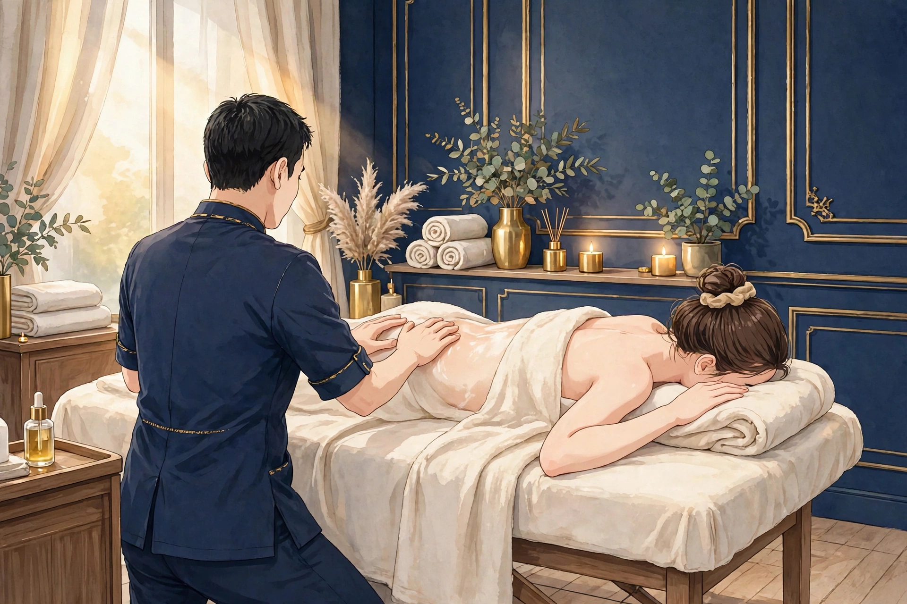
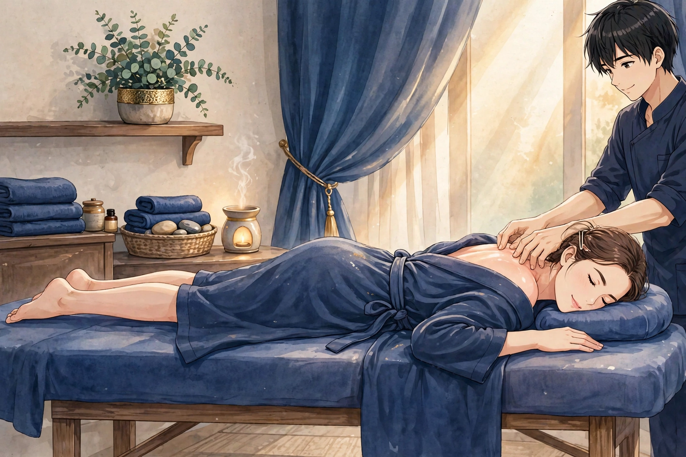

安心ガイド2026-11-18
初めての男性セラピスト、安心できるお店の選び方
男性セラピストの施術が初めてで不安な方へ。公式サイトで確認できる5つのチェックポイントと、当日の流れ・配慮のされ方を、施術歴30年の運営者がまとめました。
コラム一覧 ＞ 体の知識・セルフケア
体の知識・セルフケア2026-11-18

「朝起きたときから肩が重い」「夕方になると首までだるくなる」。そんな日は、肩だけを揉んでもすっきりしないことがあります。肩こりは、肩そのものよりも、首・背中・腕の使い方や、毎日の姿勢の積み重ねと深く関わっています。
このコラムでは、施術歴30年の運営者の視点から、施術でほぐす部位と、自宅でできるセルフケアを紹介します。つらい日の過ごし方のヒントとして、どうぞ参考にしてください。
肩のまわりには、首から背中、腕へとつながる大きな筋肉が何層にも重なっています。デスクワークで前かがみの姿勢が続くと、首の後ろから肩甲骨のまわりまでが、同じ姿勢を支え続けて固まりやすくなります。さらに、冷えや寝不足が重なると、体全体の巡りが滞り、肩の重さとして感じられやすくなります。
だからこそ、肩こりのケアでは「肩だけ」をほぐすのではなく、首・背中・腕のつながり全体を見ることが大切です。施術の現場でも、肩がつらいと相談された方の多くは、首の付け根や肩甲骨の内側にも同じような張りを抱えています。
サロンでの施術では、まず首の付け根から肩の上部にかけてのラインを、ゆっくりとほぐしていきます。ここは頭の重さを支える場所で、力が入りやすい部位です。次に、肩甲骨のまわり。肩甲骨は腕の動きの土台で、ここが固まると腕を上げる動きまで重く感じられます。
さらに、腕の付け根から上腕にかけての筋肉も見ます。パソコンやスマートフォンの操作で、腕は思っている以上に使われています。腕の疲れが抜けないと、肩の重さが残りやすいのです。
施術では、こうした部位を一か所ずつ、圧の強さを確認しながら進めます。強ければ良いわけではなく、呼吸が止まらない程度の心地よい圧で、じっくりほぐすことがポイントです。施術中に「ここが張っている」と感じる場所があれば、その場で伝えてください。
1つ目は、肩を大きく回すことです。両肩を耳に近づけるようにすくめ、ゆっくりと後ろへ回します。1回10回程度、呼吸を止めずに行うのがコツです。デスクワークの合間に、1時間に1回ほど取り入れると、肩まわりの滞りを感じにくくなります。
2つ目は、首のストレッチです。頭をゆっくりと左右に傾け、首の側面を伸ばします。無理に引っ張らず、気持ちよいと感じる範囲で止めることが大切です。反動をつけず、呼吸に合わせて行いましょう。
3つ目は、体を温めることです。冷えは肩の張りを感じやすくする要因のひとつです。入浴で肩まで湯につかったり、温かい飲み物で体を内側から温めたりする習慣は、肩の重さを和らげる助けになります。寒い季節は、首元を冷やさない工夫もおすすめです。
施術を受けるとき、いちばん大切なのは「今の圧がどう感じているか」を伝えることです。「もう少し強く」「少し弱く」。その一言が、より自分に合った施術につながります。遠慮して我慢してしまうと、せっかくの時間が心地よくなくなってしまいます。
また、痛みが強いときや、しびれを感じるときは、無理をせずに伝えてください。施術者はその情報をもとに、部位や圧を調整します。体の状態は日によって変わるため、その日の体調を正直に伝えることが、安心して受けるための近道です。
肩こりがつらい日は、肩だけを見るのではなく、首・背中・腕のつながり全体を意識してみてください。自宅でのセルフケアと、サロンでの施術を組み合わせることで、つらい日の過ごし方が少し楽になるはずです。梅田で女性専用のサロンを探している方は、ポータルの地域ページから、施術者の経歴や料金を確認して選んでみてください。
この記事に関連する本（PR）
この欄にはアフィリエイトリンク（Amazonアソシエイト／楽天アフィリエイト）が含まれます。価格は各リンク先でご確認ください。

男性セラピストの施術が初めてで不安な方へ。公式サイトで確認できる5つのチェックポイントと、当日の流れ・配慮のされ方を、施術歴30年の運営者がまとめました。